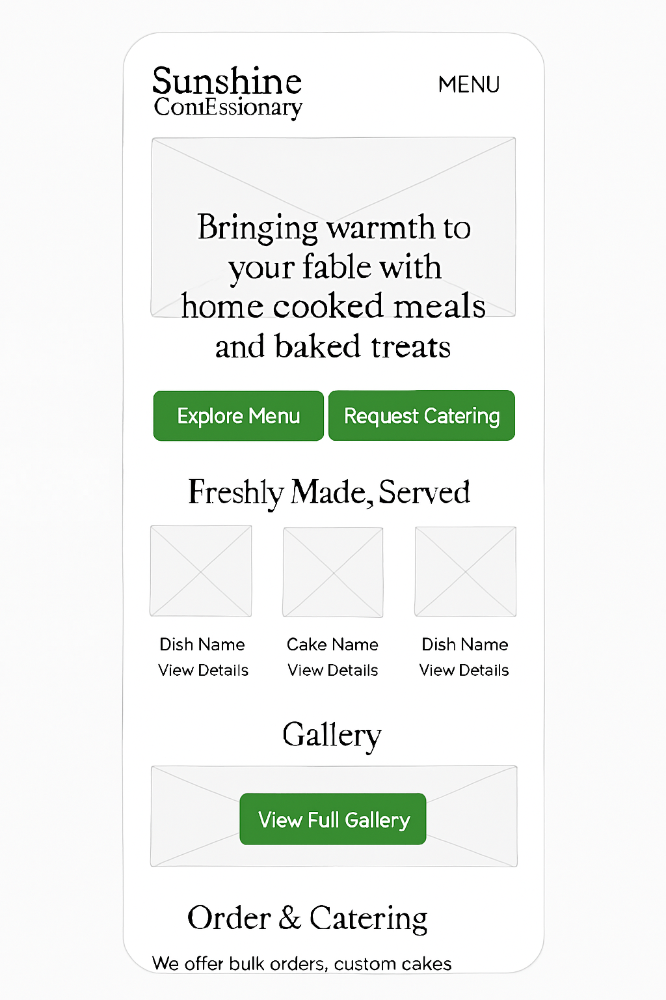
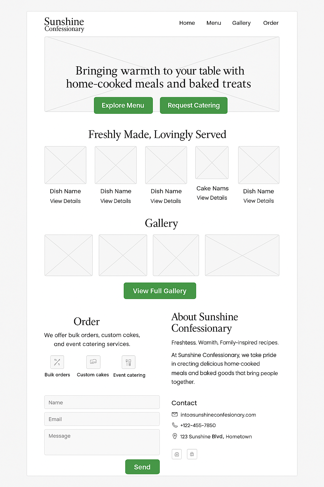

Site Name
Sunshine Confessionary is the registered name of Peace’s culinary business. It represents warmth and freshness, just like her meals and baked goods. A potential future domain: sunshineconfessionary.com
Site Purpose
The purpose of this website is to showcase meals and baked goods, provide a visual gallery, and allow customers to request catering or place orders using an online form.
Scenarios
- “Can I see the menu and gallery of meals and cakes?”
- “How can I order or request catering services?”
- “What does Sunshine Confessionary’s food look like?”
Color Schema
- Green (#4CAF50) – For headings, buttons, and accents.
- Dark Gray (#333333) – For readable body text.
- White (#FFFFFF) – Main background to keep the site fresh and airy.
Typography
- Playfair Display – Headings to create an elegant and warm tone.
- Poppins – Body text for modern and clean readability.
Wireframes
Planned layout for the home page:
Mobile View
Desktop View
Wireframes show placement of logo, hero image, menu preview, and call-to-action buttons.